Palpatine (Darth Sidious)
Dream team |
||
|---|---|---|
| 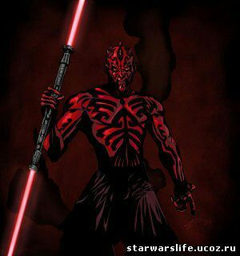 | 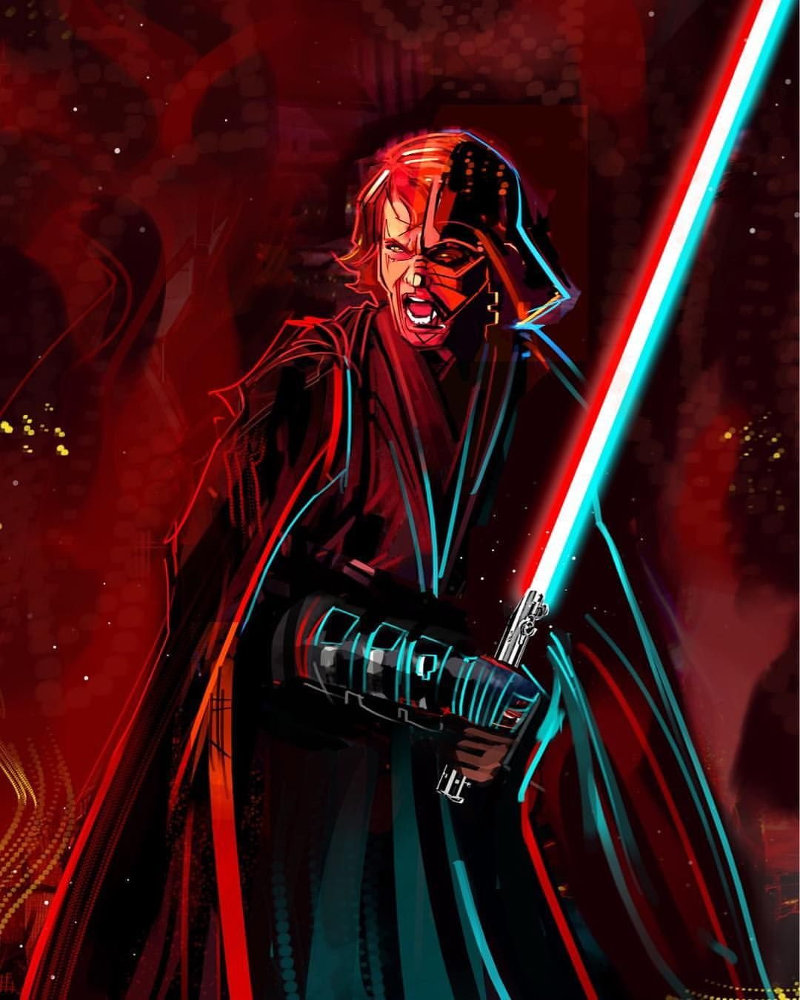 | 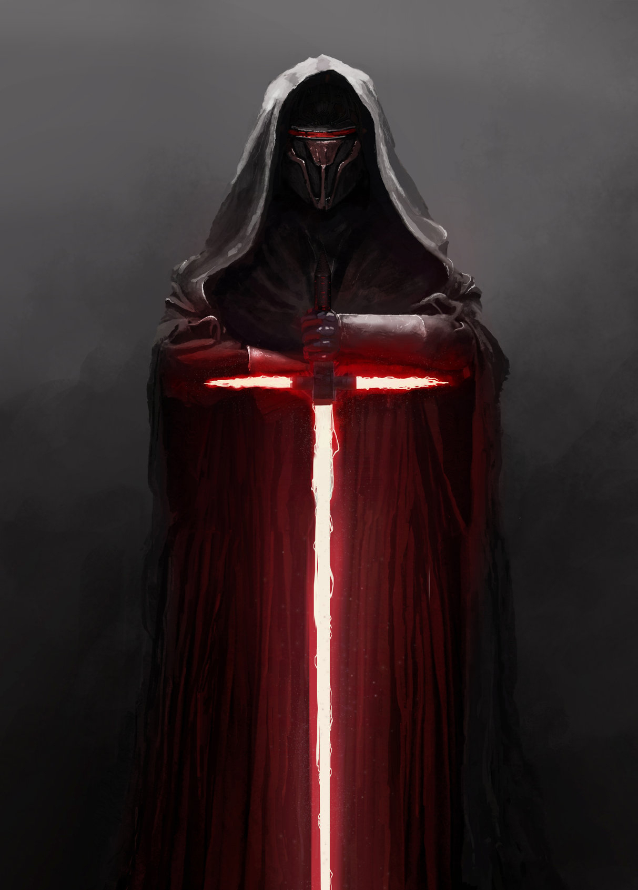 |
| 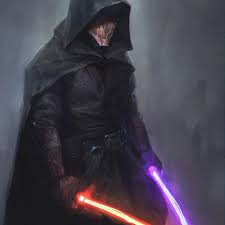 | 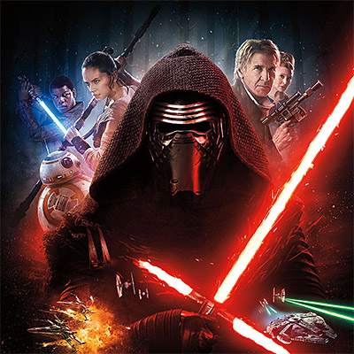 | 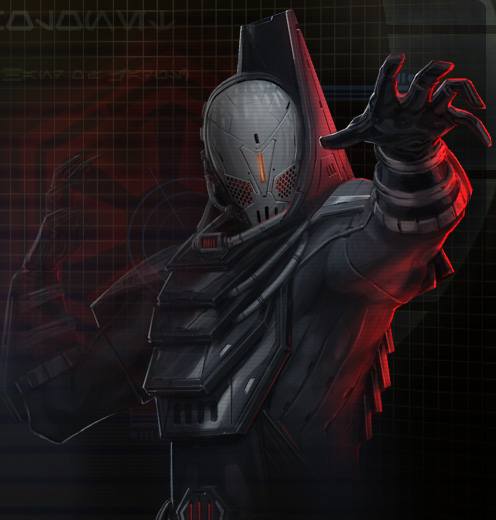 |
| 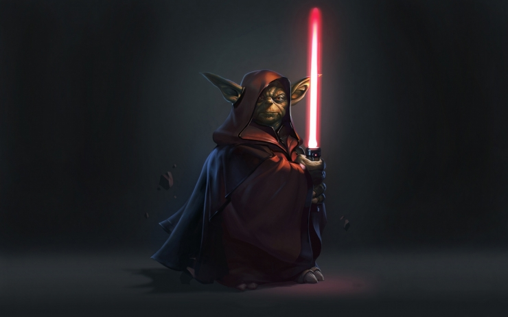 | 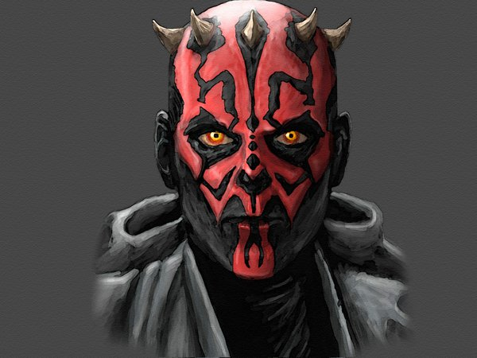 | 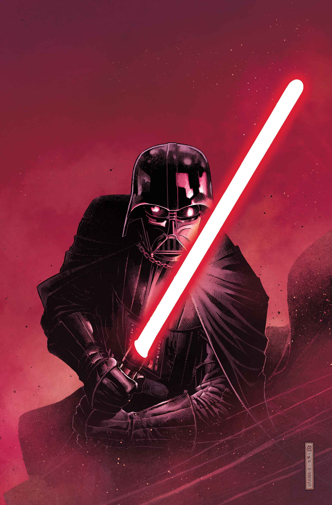 |
The Sith are major antagonists in the space opera franchise Star Wars.[1] They are depicted as an ancient monastic and kraterocratic organization of supernaturally gifted warriors driven by a machiavellian agenda of galactic domination and revenge against their arch-rivals, the Jedi knights. Prominent Sith Lords such as Darth Vader and Darth Sidious have become pop culture icons of tyranny and terror.
The Sith Order is totalitarian in which a supreme authority is concentrated in a single individual granted the honorific Dark Lord of the Sith.
Transfer of power is conducted through state-sanctioned assassinations: when a Sith Lord grows complacent, begins to shows weakness and is eventually killed, their property and authority are transferred to the apprentice who killed them. This kratocracy system ensures that Sith are only governed by those strong enough to seize control.
Sith philosophy lionizes conflict as a catalyst for growth and as a tool for purging the unworthy.
Members adhere to master morality, are characterized by the desire to seize power by any means necessary, leveraging force (both physical and supernatural), social maneuvering, and political cunning to their advantage.
 The Sith cultivate a connection to the dark side of the Force, which provides them with easy access to superhuman power and arcane knowledge; however, the trade-off is the severe cost of adapting a dark triad personality, that corrodes their basic capacity for empathy, kindness and love.
Throughout Star Wars media and in popular culture, the Sith are infamous as the dualistic antagonists to the Jedi, an affiliation of altruistic warriors who strive to use their own martial training and connection to the "Light Side" of the Force to promote peace and the common welfare throughout the galaxy.
Over their long history, the Sith have established great empires, come close to realizing their ambitions of galactic conquest, and nearly eradicated the Jedi.
Ultimately, however, they are self-defeating, their grand plans undone time and again by internal strife, rebellion inspired by their vicious tactics, and the psychologically noxious effects of their dark arts and philosophy.
The Sith cultivate a connection to the dark side of the Force, which provides them with easy access to superhuman power and arcane knowledge; however, the trade-off is the severe cost of adapting a dark triad personality, that corrodes their basic capacity for empathy, kindness and love.
Throughout Star Wars media and in popular culture, the Sith are infamous as the dualistic antagonists to the Jedi, an affiliation of altruistic warriors who strive to use their own martial training and connection to the "Light Side" of the Force to promote peace and the common welfare throughout the galaxy.
Over their long history, the Sith have established great empires, come close to realizing their ambitions of galactic conquest, and nearly eradicated the Jedi.
Ultimately, however, they are self-defeating, their grand plans undone time and again by internal strife, rebellion inspired by their vicious tactics, and the psychologically noxious effects of their dark arts and philosophy.
The Jedi /ˈdʒɛdaɪ/ are the main protagonists in the Star Wars universe

Jedi Grand Master Yoda)
Dream team |
||
|---|---|---|
| 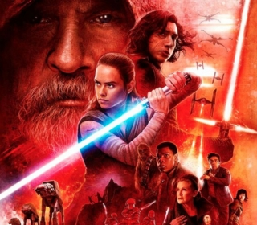 | 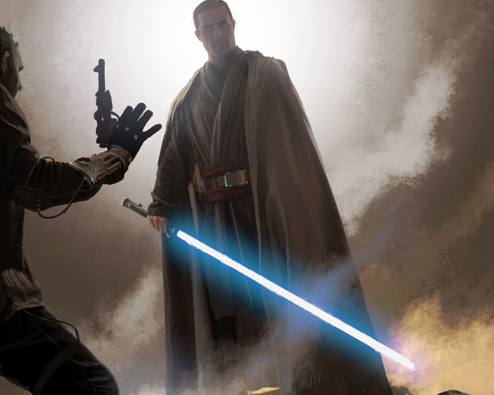 | 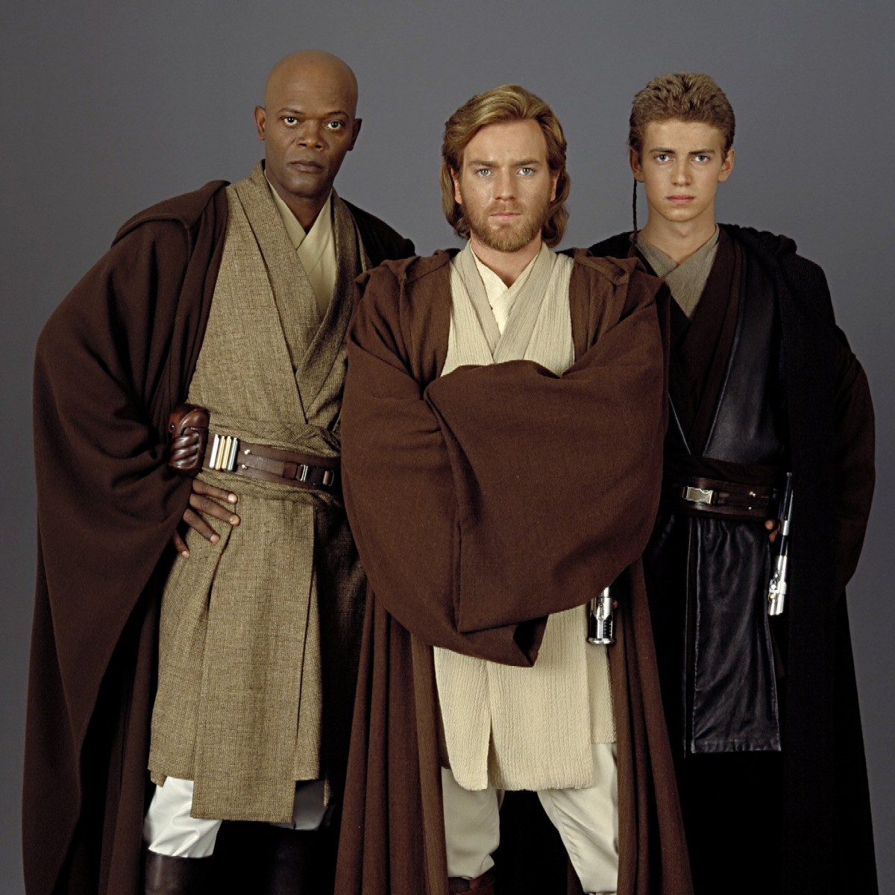 |
| 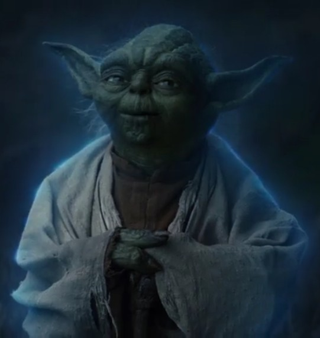 | 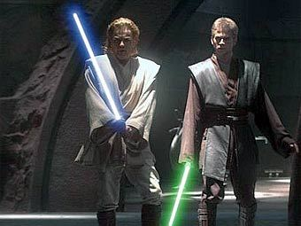 | |
| 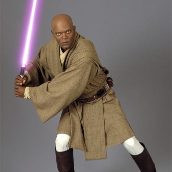 | 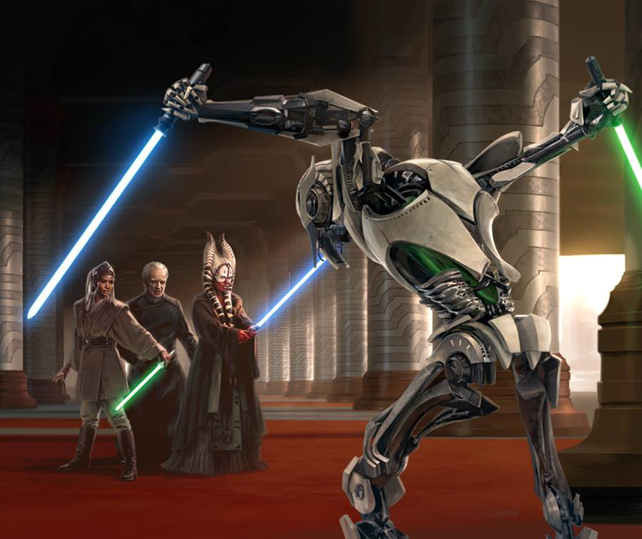 | 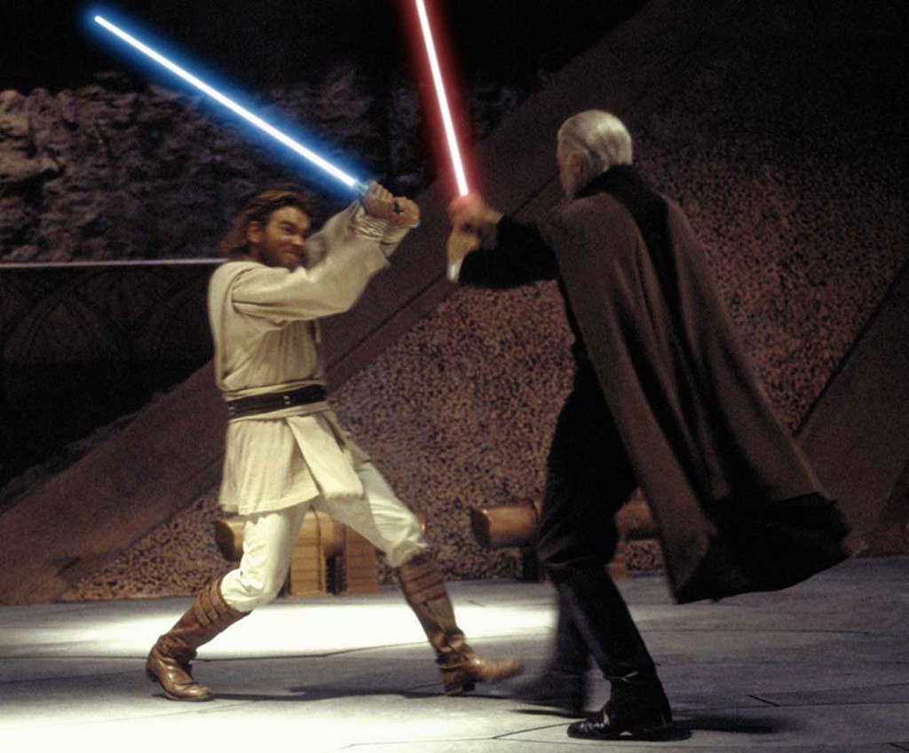 |
Fall of the New Jedi Order
Further information: Star Wars: The Force Awakens
In the sequel trilogy film series however, Luke's attempts to restore the Jedi Order has taken a turn for the worse instead as one of his apprentices, his nephew Ben, has been drawn to the dark side by Supreme Leader Snoke and become Kylo Ren. He is determined to destroy all that Luke has built, murdering most of Luke's apprentices in the occasion. After Ren's fall and the destruction of the New Jedi Order, Luke goes into a self-imposed exile on Ahch-To, believing himself and the Jedi to be a negative influence on the galaxy as a whole.
In the sequel Star Wars: The Last Jedi, the scavenger Rey discovers Luke on Ahch-to and convinces him to train her in the ways of the Force.
Rey learns the truth about Ben's fall to the dark Side and believes herself to be his only chance of redemption. Luke does not go with her, staying on Ahch-To. Luke attempts to burn the tree down, but cannot bring himself to do so. However, Yoda appears as a Force Ghost to mentor Luke one more time, burning the tree and teaching him that failure is just as important as success, and that Masters are defined by those who surpassed them. When the First Order launches an attack on the Resistance on Crait, Luke appears to stall the oncoming forces. He and Kylo Ren engage in a duel on the battlefield, Ren apparently striking him down. Luke reveals to Ren that he has been projecting an image of himself across the galaxy. On Ahch-To, an exhausted Luke meditates, facing the sunset. He hallucinates a binary sunset and fades away, becoming one with the Force.
 Rey has stolen the sacred Jedi texts and loads them onto the Millennium Falcon to continue her training.
The Jedi /ˈdʒɛdaɪ/ are the main protagonists in the Star Wars universe. They are depicted as an ancient monastic, academic, meritocratic and paramilitary organization whose origin dates back approximately 25,000 years before the events of the first film released in the franchise.
The Jedi Order mostly consists of polymaths: teachers, philosophers, scientists, engineers, physicians, diplomats and warriors. The Jedi value knowledge and wisdom, adhere to slave morality, and serve others through acts of charity, citizenship, and volunteerism; this ideology is a recurring theme in the Star Wars universe. The Jedi denounce emotions as the root of mortal suffering; they believe fear, anger and love cause sentient beings to lash out in conflict and impede rational action to do what is right. Their traditional weapon is the lightsaber, a device which generates a blade-like plasma powered by a kyber crystal. The fictional organization has inspired a real-world new religious movement, Jediism.[1]
Rey has stolen the sacred Jedi texts and loads them onto the Millennium Falcon to continue her training.
The Jedi /ˈdʒɛdaɪ/ are the main protagonists in the Star Wars universe. They are depicted as an ancient monastic, academic, meritocratic and paramilitary organization whose origin dates back approximately 25,000 years before the events of the first film released in the franchise.
The Jedi Order mostly consists of polymaths: teachers, philosophers, scientists, engineers, physicians, diplomats and warriors. The Jedi value knowledge and wisdom, adhere to slave morality, and serve others through acts of charity, citizenship, and volunteerism; this ideology is a recurring theme in the Star Wars universe. The Jedi denounce emotions as the root of mortal suffering; they believe fear, anger and love cause sentient beings to lash out in conflict and impede rational action to do what is right. Their traditional weapon is the lightsaber, a device which generates a blade-like plasma powered by a kyber crystal. The fictional organization has inspired a real-world new religious movement, Jediism.[1]